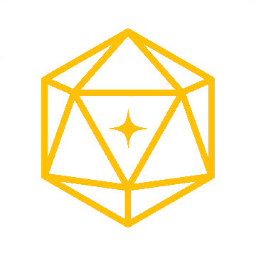

Spelljammer Wiki - Historia świata
Przed Powstaniem Imperium Eberonu (Przed 0 IE)
Nieznana Era – Powstanie Illithidów
- Illithidzi, znani także jako Mind Flayers, tworzą międzywymiarowe imperium oparte na niewolnictwie i dominacji umysłowej.
- Wykorzystują zaawansowaną magię i technologię psioniczno-mentalną, zdobywając kontrolę nad licznymi kryształowymi sferami.
- Ich niewolnikami staje się tajemnicza rasa, która przez tysiące lat pozostaje pod ich jarzmem. W późniejszych czasach rasa ta staje się znana jako Githyanki.
Czas Buntu Gith (Szacunkowo 5000–3000 lat przed IE)
- Githyanki, pod przewodnictwem swojej liderki Gith, buntują się przeciwko Illithidom.
- Po długiej wojnie Illithidzkie imperium upada, a jego niedobitki zostają zepchnięte do podziemi różnych układów, gdzie próbują odbudować swoją dawną potęgę.
- Githyanki zakładają własne imperium, opierające się na agresji i sile. Ich nadrzędnym celem staje się całkowite unicestwienie pozostałości po ich dawnych ciemiężcach, co z czasem przyjmuje formę quasi-religii i staje się kluczowym elementem ich kultury.
- W pewnym momencie z imperium Githyanki wyłania się nowa grupa – Githzerai. Ci, którzy nie zgadzają się z agresywną naturą Githyanki, odłączają się lub zostają wygnani. Początkowo prowadzą nomadyczny tryb życia w małych grupach, ale z czasem ich liczba rośnie, a społeczność zaczyna identyfikować się jako Githzerai.
Początki Piratów z Gith (Około 1500 lat przed IE)
- Część większych społeczności Githzerai zaczyna tworzyć bandy łupieżcze, co daje początek Piratom z Gith. Reszta Githzerai wciąż prowadzi życie nomadyczne lub oddaje się ascetycznej praktyce jako mnisi.
- Piraci z Gith początkowo są organizacją jednorodną rasowo, rabującą szlaki handlowe i plądrującą odległe światy.
Era Założenia i Rozwoju Imperium Eberonu (0–1500 IE)
0 IE – Powstanie Imperium Eberonu
- Astralne elfy jednoczą się, tworząc Imperium Eberonu (IE).
- Magiczne wynalazki, takie jak Spirit Warriors, stają się podstawą militarnej potęgi Imperium.
- Elfy odrzucają mechanikę na rzecz zaawansowanej magii, której używają niemal w każdym aspekcie życia.
500 IE – Pierwsze zaobserwowanie Kolosa z Syberis
- Kolos z Syberis, gigantyczna konstrukcja nieznanego pochodzenia, zostaje zauważony w przestrzeni Flogistonu.
- Jego możliwości ani cel pozostają tajemnicą. Kolos nadal przemierza przestrzeń, wzbudzając liczne spekulacje.
- Konstrukcja ta inspiruje elfy do stworzenia bardziej ergonomicznych statków, które na jego cześć otrzymują zbiorową nazwę Spelljammerów (czarostatków).
1000 IE – Powstanie Zjednoczonych Królestw Sory
- Na jednej z planet zwanej Sorą rozwija się królestwo Iskvar, którym rządzi młody książę Aleksander II. Dzięki przemyślanym układom z krasnoludami Aleksander opanowuje całą planetę i rozpoczyna ekspansję w kosmosie.
- Aleksander, choć umiera bezpotomnie, pozostawia po sobie silne i prosperujące imperium. Pod koniec swojego życia ustanawia Radę Konsuli, wybieraną z różnych światów, aby wspólnie zarządzać królestwem i prowadzić je ku świetlanej przyszłości.
1200 IE – Rozwój Piratów z Gith i ekspansja Sory
- Zjednoczone Królestwa Sory asymilują liczne światy i wchodzą w kontakt z astralnymi elfami.
- Krasnoludy z Sory zakładają organizację bankową znaną jako Koncern Belfer, która szybko zyskuje ogromny wpływ ekonomiczny.
- Piraci z Gith zaczynają przyjmować członków innych ras, przekształcając się w wielorasową organizację. Ich działalność staje się coraz bardziej zorganizowana, a ich wpływy rozciągają się na kolejne kryształowe sfery.
1500 IE – Era Wielkich Wynalazków
- Spirit Warriors osiągają szczyt technologicznego rozwoju.
- Zjednoczone Królestwa Sory rozwijają zaawansowaną technologię parową, zaczynając rywalizować z magią elfów.
- Powstają pierwsze modele Warforged, początkowo zasilane parą, choć ta metoda szybko zostaje zarzucona.
- Rebelianci w światach pod panowaniem elfów zaczynają opracowywać broń biologiczną, która później stanie się znana jako Kythony.
Nieludzka Wojna i Era Konfliktów (1900–2100 IE)
1900 IE – Narastające napięcia między frakcjami
- Napięcia między Imperium Eberonu a Zjednoczonymi Królestwami Sory osiągają punkt krytyczny.
- Rebelie w światach kontrolowanych przez elfy nasilają się. Powstaje Przymierze Wolnych Księżyców, walczące o niepodległość.
1950 IE – Rozpoczęcie Nieludzkiej Wojny
- Zjednoczone Królestwa Sory używają technologii i Warforged jako głównej siły bojowej.
- Przymierze Wolnych Księżyców wykorzystuje broń biologiczną – Kythonów, które jednak szybko wymykają się spod kontroli i zaczynają siać spustoszenie w Polysferze.
- Imperium Eberonu w odpowiedzi opracowuje własne bio-konstrukty znane jako bionoidy
2000 IE – Kulminacja wojny
- Spirit Warriors są używani w kluczowych bitwach, ale ich produkcja staje się coraz trudniejsza.
- Zwarth, tajemnicza istota lub konstrukcja, pojawia się w jednym z decydujących starć, lecz znika podczas walk w Flogistonie.
2050 IE – Koniec Nieludzkiej Wojny
- Wojna kończy się impasem, a wszystkie frakcje ponoszą ogromne straty.
- Bionoidy zostają wygnane, a produkcja Warforged zostaje wstrzymana.
Czasy Niepokoju (2100 IE – Obecnie)
2100 IE – Początek odbudowy
- Wszystkie frakcje koncentrują się na odbudowie, ale wzajemne napięcia prowadzą do zimnej wojny.
- Warforged zdobywają prawa i są uznawani za świadome istoty
2150 IE – Wzrost znaczenia Koncernu Belfer i powstanie Pustynnego Szponu
- Krasnoludzki Koncern Belfer staje się głównym graczem finansowym, wpływając na politykę wielu frakcji.
- Powstaje Pustynny Szpon, gildia zwierzoludzi, zajmująca się przemytem i działalnością przestępczą w całej Polysferze.
2210 IE – Rozpad Pętli
- Asteroida znana jako Pętla, będąca ważnym ośrodkiem handlowym w Kręgu Rebrilli, z niewiadomych przyczyn rozpada się na trzy fragmenty.
- Rozpad prowadzi do chaosu i destabilizacji w regionie, co skutkuje zniszczeniem dotychczasowego porządku.
- W wyniku tych wydarzeń powstaje niepodległe państwo, które przyjmuje nazwę **Pętla**, kontynuując tradycje poprzedniego ośrodka w nowej formie.